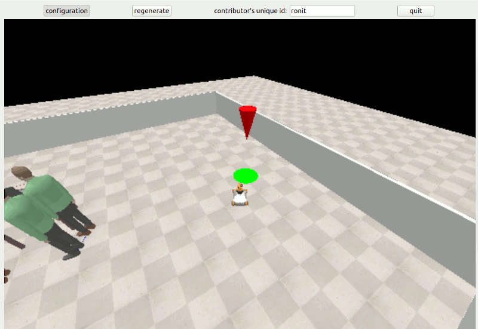
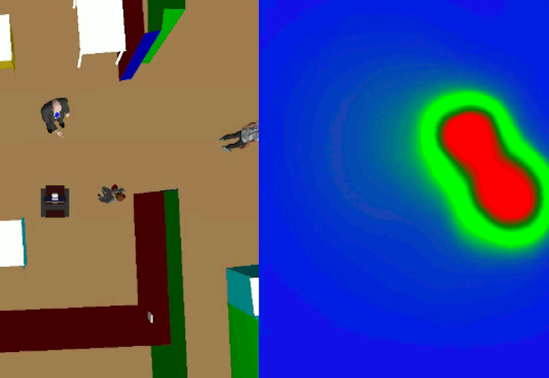
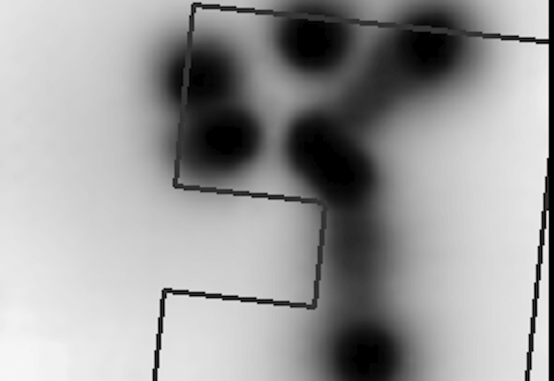
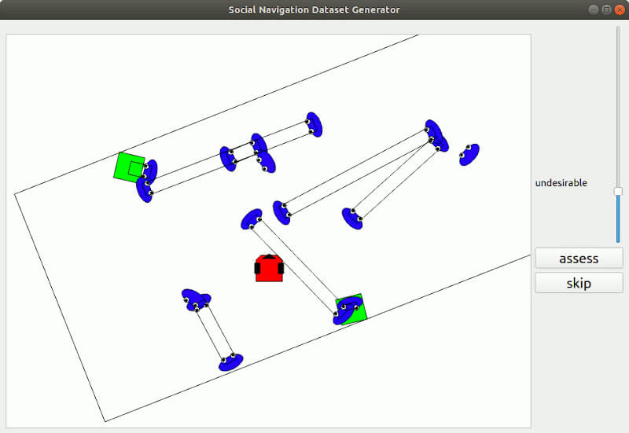

Research
Some of the most relevant projects I'am working on. Each project on this page links to its description in the webpage Graph Neural Netowrks for Human-Robot Interaction.
- 
Sonata
A tool to generate HRI datasets
- 
Graph Neural Network for Social Navigation 1D
A GNN model which estimates the navigation social compliance value for a particular scene.
- 
Graph Neural Netowrk for Social Navigation 2D
A GNN model to generate a 2D cost map for social navigation.
- 
Datasets
A collection of structured datasets related to social navigation.